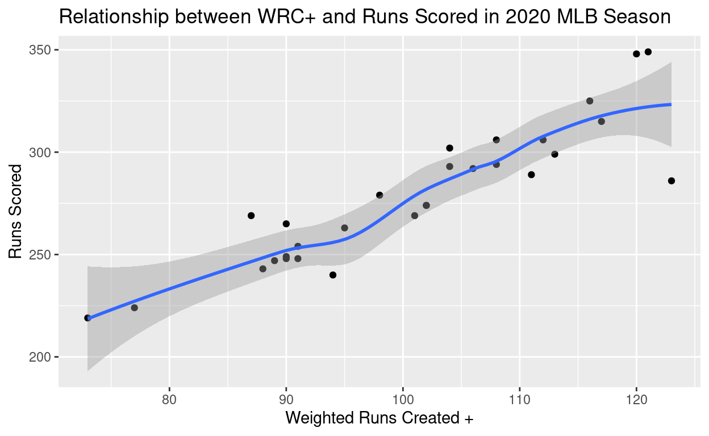
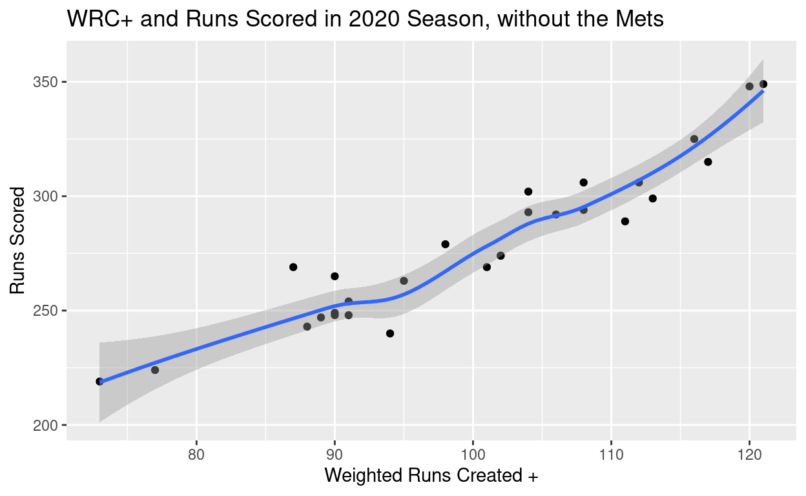

You could call me a late bloomer when it comes to baseball. I played it as a kid up until about the 5th grade before I got more involved with other sports; I never really enjoyed or cared much for the game until I was much older. I was re-intoduced to baseball rather reluctantly through my friends, notably after years of trying to blow them and the sport off. When I did inevitably revisit it, I had a new-found sense of appreciation for the game, and after a lot of deliberation/persuasion from my Met and Yankee friends, I decided to lock myself in as a Met fan. This was in the 2018, my senior year of high school. Despite only diligently watching the Mets for the better half of 4 seasons, I have witnessed an obscene amount of horror and heartbreak that I think could be nicely summarized through the use of data visualizations. The sheer improbability of the events that we will discuss in this piece have acted as sort of therapeutic remedy for me, and I hope that you too will derive some enjoyment out of this personal project.
This will focus primarily on two major Metropolitan events that I have experienced firsthand since rejoining the world of baseball. The nature of these two events are rather different in terms of what they describe, but are unified in the fact that they somehow both happened to the mets in teh short span of 3 years. The first major event we will discuss will be the most recent of the two, that being the story of the 2020 Mets.
As we are all too well aware of by now, 2020 was an extremely difficult and strange year for all of us; major league baseball was no different. Lets first set the scene: Due to Covid-19 and some other collective bargaining issues, as opposed to playing a normal 162 regular season game schedule, the league opted to instead play 60. By reducing the regular season to about 37% of its normal length, this obviously meant that teams would not be given the chance to recover from a slow start. The league recognized this and their response was to change the playoff format to something completely unprecedented and likely never to return: they were extremely lenient and allowed over half the league to qualify for the playoffs that year (16/30 teams). Baseball is notorious for having very small playoff fields, which is something that we will later touch on, and this one season remedy appeared to be fair enough for what the individual teams had been given.
That idea, and the assumption that the 2020 season wouldnt produce such wild results given the leagues accomodations, proved to be unequivocally false, and the 2020 Mets are the leading reason as to why. The Mets led MLB in batting average, were second in on-base percentage, and were fourth in slugging (total bases per at bat) percentage. By nearly any metric, they were an elite offense. These metrics can be nicely summarized by a statistic called Weighted Runs Created, which essentially boils down to how many runs a team created through their offensive output. Every outcome at the plate has a specific run value associated with it: if you hit a double, then you have created some level of scoring for your team, whether or not that single event actually results in anything tangible on the scoreboard. The same can be said for negative outcomes such as strikeouts, by doing so you have hurt your teams ability to score and have created an opportunity to score less. Weighted Runs Created, WRC, is a very powerful stat for this reason; it gives a much better indicication of how good an offense actually is over how many runs they actually score, and is directly calculated using the team batting statistics that I noted the Mets led the league in earlier, those being batting average, on base percentage, and slugging percentage. Therefore, it makes sense that the 2020 Mets led all of major league baseball in runs created.
Something worth noting about Weighted Runs Created is that it is a cumulative statistic; the more games you play the higher the value would be. This means that the worst offense in the 2019 season would register a higher WRC than the 2020 Mets simply because they have played more games. Therefore we need a new stat that will allow us to compare across different seasons and perhaps even different eras, which is exactly what WRC+ does. As opposed to calculating the efficiency of an offense cumulatively, WRC+ compares their statistics across the other teams playing that year, and spits out a number to quantify how good they were for that season of play. The way this statistic works is very different than other traditional statistics. In the realm of WRC+, since it is a comparative statistic that is quantifying for that specific year, it is calculated in such a way that a score of 100 is league average and anything above or below represents the percentage difference they are from league average. For example, a WRC+ rating of 150 means that this specific player or team was a 50% better hitter than league average, while a rating of 75 means that this player/team was 25% worse than league average.
WRC+ therefore allows us to quantify how good the 2020 Mets were at hitting against teams from other years and even completely different eras of baseball. The 2020 Mets had a team WRC+ of 123, which is the fifth highest measure of all time! They were not only good for the 2020 season, but they were supposedly one of the best offenses of all time. If it hasnt been painfully clear where this has been going yet, let me get to the punchline: The 2020 Mets did not produce the way they were supposed to offensively. In matter of fact, despite having what shouldve been the 5th best offense in the history of baseball, they missed the playoffs in a year in which over the half the league qualified. Lets take a look at our first graph representing this tradegy, which is a scatterplot showing WRC+ and Actual Runs scored for the 2020 season.

Can you figure out which point is the Mets? You may look at this graph and think to yourself why is it that WRC+ seems to do a worse job predicting the actual Runs scored of teams with exceptionally high WRC+ scores? Is it possible that its predictive value begins to break down as we reach more and more potent offenses? The answer is no. The reasoning behind this comes from the fact that the Mets represent such an extreme outlier that they are greatly warping the line of best fit. Lets take a look at what the data looks like when we remove the Mets from our analysis.

You are hopefully looking at this as dumbfounded as I first was. How could it be that such a powerful offense, one that was tasked at creating runs at a historic level, fail to actually score runs? The reasoning, outside of the Mets being the Mets, comes from the a shortfall in the way WRC+ is calculated that is often never a problem but was perhaps exacerbated by the significantly shortened season; that problem being sequencing.
Consider the following scenario: When a team goes up to bat,they draw a walk, hit a single, and hit a home run before the inning is ended. These facts alone cannot tell you how many runs the team scored. The sequence of events here matter. If the home run happens first, only 1 run will score, but if the walk and single happen prior to the home run then 3 runs will score. WRC and WRC+ have proven to be good measures of offensive production since their inception, so its more than possible that sequencing wouldve played a larger impact here. With that being said, this doesnt make the Mets infallible. The 2020 Mets as a team preformed considerably worse with runners in scoring position, that being a player on second or third base. Their triple slash, which again led the league over the course of the season at .272/.348/.459 (batting average/on-base percentage/slugging percentage) fell to .245/.328/.406 with runners in scoring position and to a pathetic .224/.310/344 in scoring circumstances with 2 outs. This can effectively account for the sequencing issue, but this paints a much different picture; the Mets were so unbelievably good at hitting when the bases were empty but became inexplicably much worse when the the bases had action. This is historically not the case; pitchers are at a disadvantage in scenarios where the bases arent empty. The Mets were simply so much worse in clutch hitting scenarios that every inning felt like a bad sequence, when in reality it was just the way the team functioned. It is improbable and inexplicable, but also doesnt paint a full picture as to why the 2020 Mets failed to live up to their expectations.
Despite their struggles to live up to the hype, the Mets offense was in the top half of the league in terms of actual runs scored. Another thing you may be thinking about at this point is how good, or really how bad, the Mets pitching must have been to keep them out an expanded playoff field. Their pitching staff wasnt spectacular, but it wasnt horrible either. One of my favorite equations as it relates to baseball in the Pythagorean Expectation formula, which gives an expected winning percentage of a team by using just the runs they scored and the runs they allowed. This allows us to play the game of seeing where the 2020 Mets wouldve ended up if their offense met expectations, if we replace actual runs scored with weighted runs created. Would they have made the playoffs, or was their pitching so bad that it isnt even worth discussing? Im sure you already know the answer by now, but check out the graph of each team with their actual wins plotted against their expected wins when we replace their actual runs scored with their weighted runs created. The Mets again under-preformed by the widest margin, and wouldve made the cut.
Earlier I mentioned how Weighted Runs Created + allows us to compare offenses from all kinds of different ERAs and how the 2020 Mets were supposedly the 5th greatest of all time. This got me wondering: how did the top 100 offenses preform each year? Did they make the playoffs in their respective seasons and if so did they win a World Series? How about whether or not any other top 100 offensive team wouldve missed the playoffs for their season if they were given the same luxuries as the 2020 Mets, where being in the top half of the league wouldve been enough to qualify? The following alluvial plot shows just that, where each team is initially seperated by league.
I found this to be absolutely astonishing. Of the top 100 offenses, only 3 would have been able to not qualify in the 2020 playoffs. The 5th ranked 2020 Mets, the 71st ranked San Fransisco Giants, and the 97th ranked Texas Rangers.
The 71st ranked Giants were also a 2020 team, but they had a considerably worse pitching staff and missed the playoffs by a tiebreaker to the Milwaukee Brewers. Their expected Pythagorean Wins was only 3 higher than what they actually achieved (as seen in the earlier graph). Sure this was a major disapointment, but it pales in comparison to that of the 2020 Mets.
The other team, the 97th ranked Texas Rangers, are the only team on this list to play in a full season, that being 2008. Their offense lived up to the billing, but their pitching staff was far and away the worst in the major leagues that year; in matter of fact it was so bad that it actually negated the potency of their offense, which makes this result unsuprising.
To further specifiy, of other top 99 offenses of all time, 97 of them wouldve qualified for the Mets postseason, 72 wouldve qualified for the postseason in their own era, notably in some of which only two teams made it, and 24 won a World Series. Its hard to call the 2020 Mets season anything short of an absolute failure when looked at in comparison to other offenses of even remote caliber.
The second moment I wanted to share and discuss doesnt require such a grand introduction as the 2020 Mets. This takes place two years prior, in the 2018 season, in a normal year of baseball, which Im still unsure makes this better or worse.
One of the major reasons I chose this case study, other from the facts that it too is completely inexplicable and happened to the Mets, is how nicely it looks juxtaposed to the misery of the 2020 Mets; they really are just two different ways of telling the same story.
In 2018, Jacob DeGrom had a historic season for a starting pitcher, and perhaps undeniably the best individual season of any starting pitcher over the past 5 years. There are many stats in baseball that can tell you how good a pitcher is, which we will see in not too long, but the one that matter most is Earned Run Average, or ERA for short. It isnt a stat that relies on any sort of inference or expected outcome such as WRC and WRC+; its simply a count of how many runs said pitcher let up that he was responsible for. What constitutes responsible is really not worth discussing in this analysis, but let me preface by saying the overwhelming majority of runs scored in an MLB season fall under the category of earned, so there is no need to worry about any implications surrounding what it constitutes.
So, based on the ERA of pitchers who pitched enough innings to qualify for MLB Awards (1 IP per team game played), Jacob DeGrom had the best ERA of any pitcher. Below is the histogram of ERA over the course of the past 5 seasons, and you can see that he sets the edge as the lowest ERA value present on this graph. Something that I found particularly interesting was that ERA appears to be normally distributed; this is not something I had ever considered or wouldve even thought.
Also worth noting is the fact that the 5 year threshold was arbitrarily chosen; nothing wacky happened in that 6th year to invalidate these findings.
So to answer the question of where the Mets being the Mets comes into question here comes from what came of such an extraordinary season by a pitcher. He let up the fewest amount of runs by any pitcher that year, so surely he must have had a dominant record, right? No.Despite doing everything he possibly couldve DeGrom had a winning percentage of only 55% in games that he started. This is astronomically low for the quality of pitching he produced. Again, how could this be possible? Sure, the Mets were bad that year and failed to miss the playoffs, but they werent this bad to warrant these kind of results.
Before I show you the scatterplot of all pitcher winning percents against their ERA, lets try and figure out why DeGrom underpreformed so heavily in the win column. Even in circumstances where he was lights out, he cant record a win in starts where the Mets failed to give him any run support. Lets take a look at how the Mets offense preformed in games started by DeGrom vs all other games in the 2018 season. The results describe the nightmare scenario we just depicted for an entire season:
In games that DeGrom started, the offense clearly preformed worse.
Id like to say, mainly for anyone unfamiliar with the concept of pitchers and them recording wins, is that it doesnt mean as much today as in the past to have a poor win percent in the eyes of baseball analysts. The era of advanced stats has allowed us to look at pitcher wins as just a piece to the puzzle rather than the full solution to how good someone was that year. This is best evidenced by the fact that Jacob DeGrom won the 2018 Cy Young Award, which is voted on by baseball media members as the best individual pitcher that year, despite having a record no where near the top of the league. This is all great for DeGrom, but the losses still count towards the 2018 Mets record, and played a major role in the lack of their success that season.
I mentioned earlier how a lot of pitching stats, some more involved than others, are all either loosely or directly related to each other. There is no stat directly related to win percent, but there are quite alot heavily related to ERA. Lets take a look at the correlation matrix of some of baseballs top pitching statistics and see if the quality of a pitcher has any indication on how many games they win or other peripheral measures of their success.
Lets break down some terms you may be unfamiliar with:
FIP - Fielding Independent Pitching is essentially another way to calculate a pitchers individual impact on his team, but is distinct from ERA in that it is more robust and places heavier weight on events completely within the pitchers control such as Home Runs and Strikeouts.
ERA Plus - Identical in nature to WRC+ we discussed earlier, expect now in relation to pitcher ERAs.
WHIP - Walks, Hits, Innings Pitched is a measure of how many runners a pitcher allows per inning. Naturally, the lower this number is the better.
Any per 9 stats indicate the number of said stat the pitcher allows every 9 innings of work; this is done as a baseline which we can compare players across
Now that we have a good idea of what were looking at, we can see that a lot of these indicators are strongly correlated, and all of which are moderately strong with win percent, the highest of which is just plain ERA, which makes sense. The more runs you allow, the less games you will win. This holds true over any other measure, whether they be walks or singles or any other negative stat.
I think this chart is very interesting and delves into the beauty of baseball; any stat on its own isnt really worth anything but we can check its accuracy by comparing them to other closely related stats and get a better picture of an individual player.
A lot of these correlation values are obvious to anyone who is familiar with these terms and how they are calculated because they are all based off each other: of course ERA and ERA+ have an extremely high correlation coefficient, and the same can be said with walks allowed per nine and WHIP. One that is not dependent on each other but is exceptionally high is WHIP with ERA. They make sense when you think about it, as more base runners allowed will lead to more runs allowed, but the link is stronger than I initially imagined.
All of this is to show and say that the failures of DeGrom in the 2018 season should not represent anything close to a norm. He was an exceptional pitcher in 2018 and every possible pitching metric backs that claim up. The fact that he only won 10 games in a season in which he started 34 games (missing number in win/loss column represent no decisions, which are games in which DeGrom left the game tied) is just tragic. Of all the graphs I made for this project, I found this one to be the most comical; Im sure you can figure out where DeGrom is listed on this scatter plot of ERA against win percent.
And just for the sake of it, lets see what this would look like if we remove DeGrom from this 5 year analysis
These two events represent some of the most improbable events in the history of baseball, and the fact that they happened within a 3 year span to the same team is what is so beautiful and horrifying about the game of baseball.